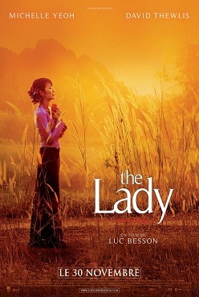
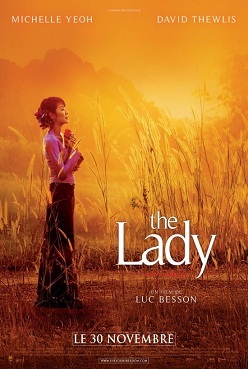

is a British biographical film directed by Luc Besson.
Based on the life of Nobel Peace Prize winner Aung San Suu Kyi, who spent a total of 15 years under house arrest for political reasons, and about her tragic marriage.
Based on the life of Nobel Peace Prize winner Aung San Suu Kyi, who spent a total of 15 years under house arrest for political reasons, and about her tragic marriage.
